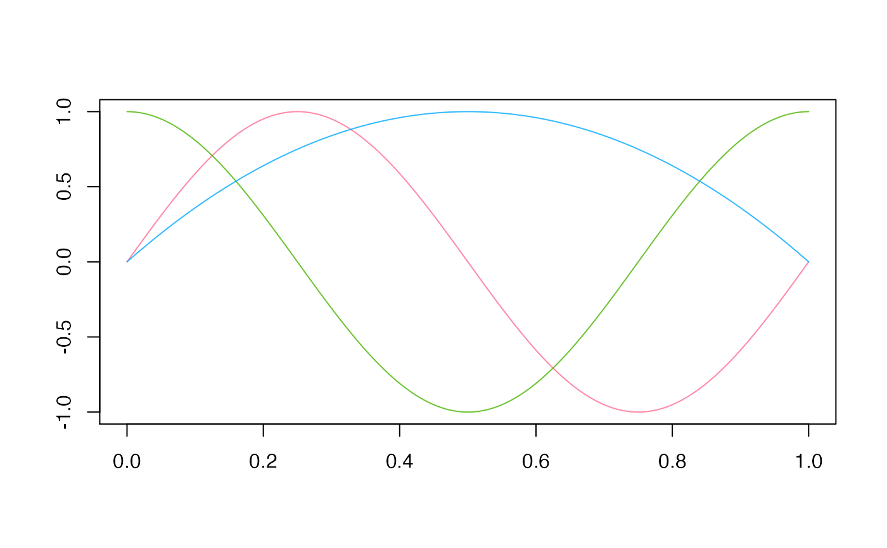

R/correlation.R
area_under_curve.RdThis method computes the (signed) area under the curve of elements of a univariate functional dataset, namely, their integral.
area_under_curve(fData)
| fData | the functional dataset containing elements whose areas under the
curve have to be computed, in form of |
|---|
The function returns a numeric vector containing the values of areas
under the curve for all the elements of the functional dataset
fData.
Given a univariate functional dataset, \(X_1(t), X_2(t), \ldots, X_N(t)\), defined over a compact interval \(I=[a,b]\) and observed on an evenly spaced 1D grid \([a = t_0, t_1, \ldots, t_{P-1} = b] \subset I\), the function computes:
$$ \sum_{i=1}^{P-2} \frac{X(t_{i+1}) - X(t_{i-1})}{2} h \approx \int_a^b X(t) dt,$$
where \(h = t_1 - t_0\).
P = 1e3 grid = seq( 0, 1, length.out = P ) fD = fData( grid, matrix( c( sin( 2 * pi * grid ), cos( 2 * pi * grid ), 4 * grid * ( 1 - grid ) ), nrow = 3, ncol = P, byrow = TRUE ) ) plot( fD )area_under_curve( fD )#> [1] 2.437761e-18 -4.705437e-17 6.666660e-01